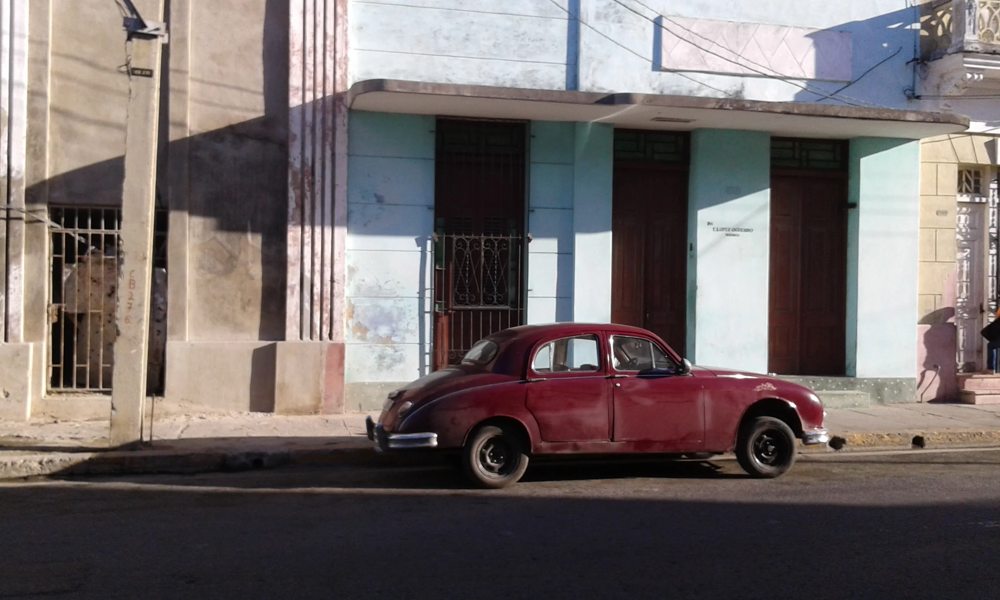

Crossing the Atlantic and travelling to America for those who likes music, literature and cinema in particular is always a hell of a journey, no matter if you are going to the United States or to Latin America. Some of the things I was mostly looking forward to knowing were the tales of Hernest Hemingway and latin jazz music. Seeing the statue of papa Hemingway sitting at the Floridita in La Havana, waiting for one of his specials was simply amazing and digging deeper into afro-cuban music and culture was the other reason.
My time in Cuba was limited and therefore I had to make choices since I couldn't travel all over the island. I decided to fly to Varadero first that despite all of its soulless resorts can offer amazing beaches and be enough relaxing for those who have to get rid of the jetlag after a 12 hours flight. The next stops afterwards were in order: Cienfuegos, Trinidad, La Havana, Vinales, Matanzas and back to Varadero.

Cuba and its apparent happy rural everyday life were overall quite inspiring and during my stay there I was able to write a bunch of poems and also some of the songs of the album "For the Time Being", in particular "Guanabana Guajira Hat" and "La Revolucíon desde tu Cuerpo".
LOS GUAJIROS Los guajiros se vienen Los guajiros se van con sus exitos tristes todo el dia cantan Son sonidos tan buenos que la gente no sabe si quedarse o irse si pararse o andar Los guajiros son actores y su escena es la calle y su peli es la vida.
ANTES QUE ATAQUEN ELLOS Estamos listos para ataquar para convertirlos para llegar Contaran los muertos y el que no mata se quedará sin techo se quedará sin vestidos y sin almuerzo.
To make it simple, everything started with Habanera. Habanera comes from Contradanse, english country dance music adopeted at the court of France and taken to America, where became important and developed in Mambo and Cha-Cha-Cha. Habanera is famous for its rhythm time signature in 2/4 with the upbeat falling in the middle of the bar.
The concept of Clave is fondamental in latin music and that is a concept that comes from the african diaspora. The clave is made of five beats, which can be divided in either 3/2 or 2/3.
Benny Moré "el barbaro del ritmo" is considered one of the most influencial musician of the once-upon-a-time cuban music scene. Born from a family of african origins, he had to struggle with the economical issues of his huge family (18 children) and he was send to work in the fields at a young age. Young Benny loved to sing and in his youth was literally singing to anyone he met on his way. He reached celebrity in a more or less casual way, firstly winning a radio competition and secondly by joining the "trio Matamaros"due to the fact that the main singer was indisposed for the occasion. Moré went touring to México and for some reason became famous abroad before reaching celebrity in his beloved Cuba and within' the years his celebrity expanded through all the center America while touring with the "Banda Gigante". His alcoholism was the cause of his early despedida but if you talk to many on the island, Benny Moré never really left.